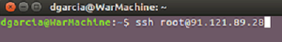

Una máquina virtual es un software que simula una computadora real (Lescano, 2016), en la cual se incluyen las tarjetas de red, memoria RAM, disco duro, sistema operativo, núcleos de procesamiento entre otros más aspectos. Cada máquina virtual se encuentra limitada por los recursos físicos virtualizados que el administrador les haya otorgado. Estas máquinas virtuales se usan para la ejecución de sistemas operativos orientados a servidores; donde cada servidor se encargará de procesar tareas, ejecución de software, alojamientos se servidores de correo, servidores web y muchos más.
Para la creación de una máquina virtual se establecen los siguientes pasos básicos a seguir:
1. Después de haber realizado el proceso de virtualización, se deben descargar las imágenes de instalación ISO de los sistemas operativos a usar.
A. Se establece una conexión ssh con la IP principal de servidor y el usuario root de proxmox.
Ilustración 1 Conexión SSH al servidor.
B. Cuando la conexión sea exitosa, debemos acceder a la ruta /var/lib/vz/template/iso/ en la cual se guardarán las imágenes de instalación ISO de los sistemas operativos a usar en las máquinas virtuales.
Ilustración 2 Ruta de acceso a las imágenes de instalación ISO. .
C. Como último paso se deben descargar las imágenes ISO a través del comando wget “url de la descarga”.
Ilustración 3 Descarga de las imágenes de instalación.
Nota:Estas imágenes ISO también pueden ser cargadas desde un servidor local a través de un servicio ftp, por medio del uso del comando scp o gráficamente desde el panel de control de proxmox.
D. Por último, listamos las imágenes descargadas para corroborar si se han descargado o cargado exitosamente.
Ilustración 4 Lista de imágenes descargadas.
2. Después de haber descargado los sistemas operativos a instalar, se procede a crear cada máquina virtual.
A. En el panel de administración de proxmox, se da click en el botón create VM.
Ilustración 5 Creación de la Máquina Virtual en el panel de administración de Proxmox.
B. Al dar click en el botón create VM se desplegará una ventana en la cual se ingresará la información básica como el Id (Identificador) y el Nombre de la máquina virtual.
Ilustración 6 Creación Máquina Virtual, Información general.
Nota:En este paso se le asignará como ID 101 y Nombre centos7.
C. Seleccionamos el tipo y arquitectura del sistema operativo a instalar. En este paso se instalará Centos 7 minimal x86_64 por tanto se seleccionará la opción Linux 4.X/3.X/2.6 kernel.
Ilustración 7 Creación Máquina Virtual, tipo S.O.
D. Seleccionamos la imagen de instalación ISO de Centos 7.
Ilustración 8 Creación Máquina Virtual, Lector ISO.
Nota:Se usará una imagen ISO de instalación, seleccionamos que la imagen se encuentra almacenada localmente y por último escogemos la imagen Centos7.
E. Seleccionamos el disco duro a usar, el tamaño del disco duro y el formato de virtualización.
Ilustración 9 Creación de la Máquina Virtual, Disco Duro.
F. Ingresamos la cantidad de Sockets, Núcleos y el tipo de virtualización a usar en la máquina virtual. Para este trabajo utilizaremos KVM64.
Ilustración 10 Creación de la Máquina Virtual, información CPU.
G. Se ingresa el tamaño fijo de memoria RAM para la máquina virtual
Ilustración 11 Creación de la Máquina Virtual, Memoria RAM.
Nota:Se puede ingresar un tamaño de memoria dinámico, el cual está dado por un rango ingresado por el usuario; donde proxmox cambiara el valor dependiendo el uso de memoria RAM del servidor.
H. Se selecciona la tarjeta en Modo Puente y el modelo de la tarjeta de Red de nuestro servidor.
Ilustración 12 Creación de la Máquina Virtual, Red.
Nota:En este trabajo de escogió modo puente ya que la máquina virtual será independiente para su conexión a internet de las otras máquinas creadas.
I. Por último, se muestra la información de toda la máquina virtual, y se da en finalizado para confirmar.
Ilustración 13 Creación de la Máquina Virtual, Confirmación de Datos.